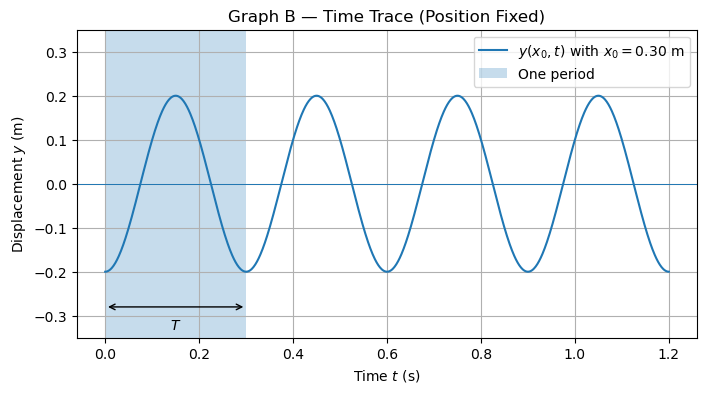
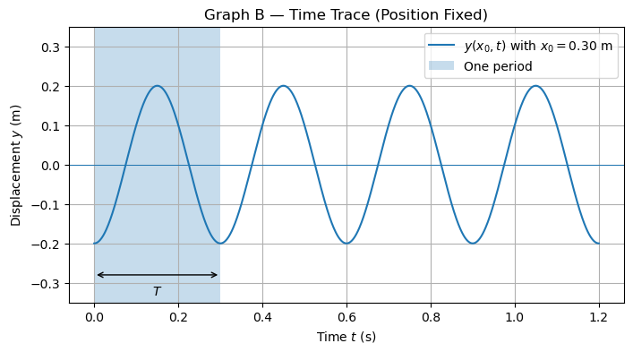

D6.5 Assessment - Oscillations and Traveling Waves#
Problem 1: Spatial and Temporal Repetition in a Traveling Wave#
LOC addressed: B4, B5, B6
A traveling wave on a string is described by the equation
where \(x\) is measured in meters and \(t\) is measured in seconds.
Answer the following:
Identify the wavenumber \(k\) and the angular frequency \(\omega\).
Compute the wavelength \(\lambda\) of the wave.
Compute the period \(T\) of the wave.
Compute the frequency \(f\).
Compute the phase speed \(v\).
In one or two sentences, explain how the spatial term and temporal term in the wave equation encode different physical information.
Problem 1 solution
Part 1 — Identify \(k\) and \(\omega\)
Compare the given equation to the standard form
From direct comparison:
Part 2 — Wavelength
Part 3 — Period
Part 4 — Frequency
Part 5 — Phase speed
Part 6 — Conceptual explanation
The spatial term \(kx\) determines how the wave pattern repeats in space (it sets \(\lambda\)), while the temporal term \(\omega t\) determines how the motion repeats in time (it sets \(T\) and \(f\)). Together they describe a repeating pattern that propagates through space.
# DIY Cell
Problem 2: Phase Differences in a Traveling Wave#
LOC addressed: C1, C2, B2
A traveling wave on a string is described by
where \(A\), \(k\), and \(\omega\) are positive constants.
Consider two fixed positions along the string:
The wavelength of the wave is
Answer the following:
Determine the phase difference \(\Delta\phi\) between the oscillations at \(x_1\) and \(x_2\).
State whether the two points are in phase, out of phase, or neither.
Determine what fraction of a cycle the phase difference represents.
In one or two sentences, explain what this phase difference means physically for the motion of the string at the two positions.
Problem 2 solution
Part 1 — Phase difference
For a traveling wave, the phase is
At a fixed time, the phase difference between two positions depends only on their separation:
First compute the wavenumber:
Now compute the separation:
So the phase difference is
Part 2 — In phase or out of phase?
A phase difference of \(\pi\) radians corresponds to half of a full cycle.
Therefore, the two points are out of phase.
Part 3 — Fraction of a cycle
A full cycle corresponds to \(2\pi\) radians. Thus,
The two points differ by half a cycle.
Part 4 — Physical interpretation
When one point on the string is at a maximum positive displacement, the other point is at a maximum negative displacement. The two points oscillate with the same frequency but are always in opposite states of motion.
# DIY Cell
Problem 3: Interpreting Wave Graphs — Space vs. Time#
LOC addressed: D1, D2, D3, D4
Two graphs of the same traveling wave are shown below:
Graph A: Displacement \(y\) versus position \(x\) at a fixed time \(t=t_0\).
Graph B: Displacement \(y\) versus time \(t\) at a fixed position \(x=x_0\).
Answer the following questions.
For Graph A, identify what physical quantity is shown on each axis and state what is being held fixed.
From Graph A, determine the wavelength \(\lambda\) of the wave.
For Graph B, identify what physical quantity is shown on each axis and state what is being held fixed.
From Graph B, determine the period \(T\) of the wave.
Using your values of \(\lambda\) and \(T\), compute the phase speed \(v\).
In one or two sentences, explain why Graph A does not show particles moving along the string.
Problem 3 solution
Part 1 — Interpreting Graph A
Graph A shows displacement \(y\) versus position \(x\).
The horizontal axis represents position along the string.
The vertical axis represents displacement of the string.
Time is held fixed at \(t=t_0\).
This graph is a spatial snapshot of the wave.
Part 2 — Wavelength
The wavelength is the distance between repeating features (such as crests).
From Graph A, successive crests are separated by approximately
Part 3 — Interpreting Graph B
Graph B shows displacement \(y\) versus time \(t\).
The horizontal axis represents time.
The vertical axis represents displacement at a fixed position \(x=x_0\).
Position is held fixed.
This graph is a time trace of the wave.
Part 4 — Period
The period is the time between repeating features in time.
From Graph B, successive crests occur approximately every
Part 5 — Phase speed
The phase speed is
Part 6 — Conceptual explanation
Graph A does not show particles moving along the string. Instead, it shows how the displacement of the string varies with position at a single instant in time. The wave describes the motion of a repeating pattern, not the transport of matter.
 

# DIY Cell
Problem 4: Phase Constant and Initial Conditions in Oscillatory Motion#
LOC addressed: A2, A3, A5
A particle undergoes oscillatory motion along the \(x\)-axis described by
where \(A\), \(\omega\), and \(\phi\) are constants.
At time \(t=0\), the particle is observed to be at its maximum positive displacement.
Answer the following:
What does it mean physically for the particle to be at its maximum positive displacement at \(t=0\)?
What value of the phase constant \(\phi\) is consistent with this observation?
Suppose instead that at \(t=0\) the particle is at zero displacement and moving toward positive \(x\). What value of \(\phi\) would describe this situation?
In one or two sentences, explain the role of the phase constant in oscillatory motion.
Problem 4 solution
Part 1 — Physical meaning of maximum displacement
Maximum positive displacement means the particle is located at
and is momentarily not changing direction at that instant. This corresponds to the crest of the oscillation.
Part 2 — Phase constant for maximum displacement
At \(t=0\), the position is
To have \(x(0) = +A\), we require
This occurs when
Part 3 — Zero displacement, moving toward positive \(x\)
Zero displacement requires
This occurs when
These values correspond to the particle passing through equilibrium in the positive direction.
A valid choice is
Part 4 — Conceptual explanation
The phase constant determines the state of the motion at \(t=0\). Different values of \(\phi\) describe the same oscillation shifted in time, corresponding to different initial positions and directions of motion. See figure below for illustration.
# DIY Cell
Problem 5: Motion of Matter vs. Motion of a Pattern#
LOC addressed: C3, E1
A traveling wave moves along a stretched string from left to right.
A student makes the following statement:
“Since the wave travels to the right, points on the string must also move to the right as the wave passes.”
Answer the following:
Is this statement correct or incorrect?
In one or two sentences, explain the difference between motion of the wave pattern and motion of the string itself.
Describe the actual motion of a small marked point on the string as the wave passes.
Problem 5 solution
Part 1 — Correct or incorrect
The statement is incorrect.
Part 2 — Pattern vs. matter
The wave describes the motion of a repeating pattern, not the transport of matter.
While the pattern (crests and troughs) moves to the right, the material points of the string do not travel with the wave.
Part 3 — Motion of a point on the string
A small marked point on the string oscillates back and forth about its equilibrium position as the wave passes. After the wave has passed, the point returns to its original location rather than being carried along with the wave.
Key takeaway
A traveling wave represents the propagation of a disturbance, not the bulk motion of matter. This distinction is essential for correctly interpreting wave motion.
Problem 6: Interpreting and Plotting an Oscillation#
LOC addressed: A2, A3, A4, A5, D1
An oscillatory motion along the \(x\)-axis is described by the expression
where \(x\) is measured in meters and \(t\) is measured in seconds.
Answer the following:
Identify the amplitude \(A\).
Identify the angular frequency \(\omega\).
Determine the frequency \(f\) and period \(T\).
Identify the phase constant \(\phi\) and describe what it tells you about the motion at \(t=0\).
Using Python, plot \(x(t)\) for the time interval
\[ 0 \le t \le 1.0~\text{s}. \]Clearly label the axes and include units.
Problem 6 solution
Part 1 — Amplitude
From the coefficient in front of the cosine,
Part 2 — Angular frequency
Comparing to the standard form
we identify
Part 3 — Frequency and period
The frequency is
The period is
Part 4 — Phase constant
The phase constant is
This value specifies the state of the oscillation at \(t=0\), meaning the particle does not start at maximum displacement but partway through its cycle.
Part 5 — Plot interpretation
The plot of \(x(t)\) shows oscillatory motion repeating every \(T = 0.333~\text{s}\) with maximum displacement \(\pm 0.25~\text{m}\), consistent with the identified parameters.
# DIY Cell